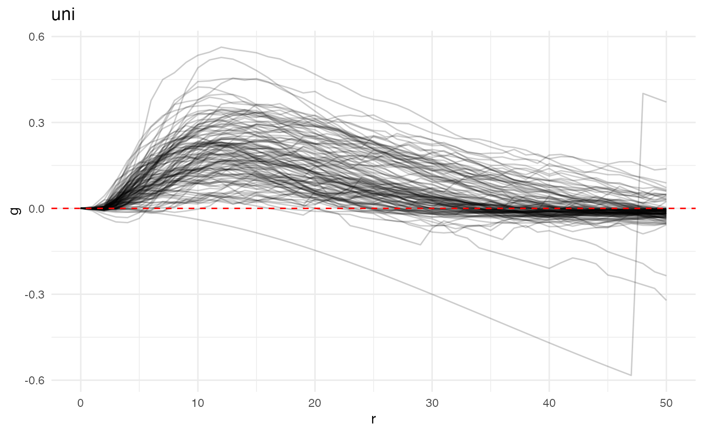
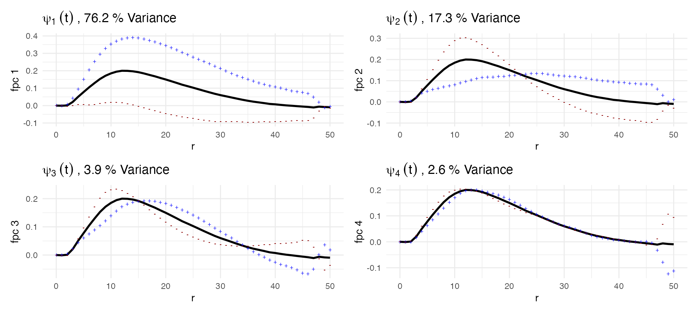
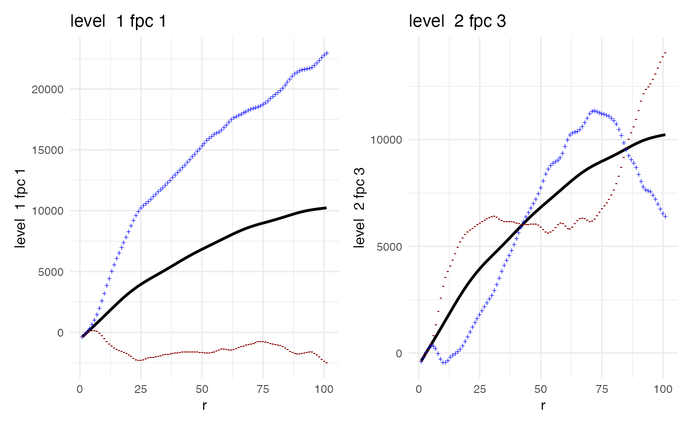

This vignette describes the mxfda package for
analyzing single-cell multiplex imaging data using tools from functional
data analysis. Analyses for this package are executed and stored using
an S4 object of class mxFDA. This vignette outlines how to
set up an mxFDA object from spatial single cell imaging
data, how to calculate spatial summary functions, and exploratory data
analysis and visualization of these spatial summary functions. Details
on how to perform downstream analysis and feature extraction using
functional principal components analysis can be found in the separate
vignette mx_fpca. To perform functional regression on
spatial summary functions from multiplex imaging data, see the
mx_funreg vignette.
Functional data notation
The basic unit of observation is the curve \(Y_i(t)\) for subjects \(i \in \ldots, I\) in the cross-sectional setting and \(Y_{ij}(t)\) for subject \(i\) at visit \(j \in \ldots, J_i\) for the multilevel or longitudinal structure. Methods for functional data are typically presented in terms of continuous functions, but in practice data are observed on a discrete grid that may be sparse or dense at the subject level and that may be the same across subjects or irregular.
Functional principal components analysis (FPCA)
Background on FPCA
Background on FPCA
FPCA characterizes modes of variability by decomposing functional observations into population level basis functions and subject-specific scores . The basis functions have a clear interpretation, analogous to that of PCA: the first basis function explains the largest direction of variation, and each subsequent basis function describes less. The FPCA model is typically written Y_i(t) = (t) + {k=1}^{K} c{ik}_{k}(t) + _i(t) where \(\mu(t)\) is the population mean, \(\psi_{k}(t)\) are a set of orthonormal population-level basis functions, \(c_{ik}\) are subject-specific scores with mean zero and variance \(\lambda_k\), and \(\epsilon_i(t)\) are residual curves. Estimated basis functions \(\widehat{\psi}_1(t), \widehat{\psi}_2(t), \ldots, \widehat{\psi}_{K}(t)\) and corresponding variances \(\widehat{\lambda}_1 \geq \widehat{\lambda}_2 \geq \ldots \geq \widehat{\lambda}_K\) are obtained from a truncated Karhunen-Lo`eve decomposition of the sample covariance \(\widehat{\Sigma}(s,t) = \widehat{\mbox{Cov}}(Y_i(s), Y_i(t))\). In practice, the covariance \(\widehat{\Sigma}(s,t)\) is often smoothed using a bivariate smoother that omits entries on the main diagonal to avoid a ``nugget effect” attributable to measurement error, and scores are estimated in a mixed model framework . The truncation lag \(K\) is often chosen so that the resulting approximation accounts for at least 95% of observed variance.
Implementing FPCA
Load and visualize data
Here we load data from the Ovarian cancer dataset that where
univariate nearest-neighbor G-functions for immune cells have already
been extracted. See the vignette mxfda::mx_fda for more
details on extracting spatial summary functions.
data("ovarian_FDA")
ovarian_FDA
#> mxFDA Object:
#> Subjects: 128
#> Samples: 128
#> Has spatial data
#> Univariate Summaries: Gest
#> Bivariate Summaries: None
#> FPCs not yet calculated
#> MFPCs not yet calculated
#> FCMs not yet calculated
#> MFCMs not yet calculatedThese functions are visualized below.
plot(ovarian_FDA, y = "fundiff", what = "uni g", sampleID = "patient_id") +
geom_hline(yintercept = 0, color = "red", linetype = 2) +
theme_minimal() 
Run and visualize FPCA
ovarian_FDA <- run_fpca(ovarian_FDA,
metric = "uni g", r = "r",
value = "fundiff",
pve = .95)
ovarian_FDA
#> mxFDA Object:
#> Subjects: 128
#> Samples: 128
#> Has spatial data
#> Univariate Summaries: Gest
#> Bivariate Summaries: None
#> FPCs Calculated:
#> Gest: 4 FPCs describe 96.9% variance
#> MFPCs not yet calculated
#> FCMs not yet calculated
#> MFCMs not yet calculatedExplain each of these plots
p1 = plot(ovarian_FDA, what = 'uni g fpca', pc_choice = 1)
p2 = plot(ovarian_FDA, what = 'uni g fpca', pc_choice = 2)
p3 = plot(ovarian_FDA, what = 'uni g fpca', pc_choice = 3)
p4 = plot(ovarian_FDA, what = 'uni g fpca', pc_choice = 4)
(p1 + p2)/(p3 + p4)
INTERPRET WHAT YOU LEARNED FROM FPCA- this is an important piece
Shout out to refund.shiny
G_fpca = extract_fpca_object(ovarian_FDA,
what = "uni g fpca", r = "r")
class(G_fpca)
#library(refund.shiny)
#plot_shiny(G_fpca)MFPCA
MFPCA Background
Background on mfpca
Multilevel functional principal components analysis (MFPCA) extends the ideas of FPCA to functional data with a multilevel structure.
Multilevel functional data are increasingly common in practice; in the case of our DTI example, this structure arises from multiple clinical visits made by each subject. MFPCA models the within-subject correlation induced by repeated measures as well as the between-subject correlation modeled by classic FPCA. This leads to a two-level FPC decomposition, where level 1 concerns subject-specific effects and level 2 concerns visit-specific effects. Population-level basis functions and subject-specific scores are calculated for both levels . The MFPCA model is:
\[ X_{ij}(r) = \mu(r) + \sum_{k_1=1}^{K_1} c_{ik}^{(1)}\psi_{k}^{(1)}(r) + \sum_{k_2=1}^{K_2}c^{(2)}_{ijk}\psi_{k}^{(2)}(r) + \epsilon_{ij}(r) \]
where \(\mu(t)\) is the population mean, \(\eta_j(t)\) is the visit-specific shift from the overall mean, \(\psi_{k}^{(1)}(t)\) and \(\psi_{k}^{(2)}(t)\) are the eigenfunctions for levels 1 and 2, respectively, and \(c_{ik}^{(1)}\) and \(c^{(2)}_{ijk}\) are the subject-specific and subject-visit-specific scores. Often, visit-specific means \(\eta_j(t)\) are not of interest and can be omitted from the model. Estimation for MFPCA extends the approach for FPCA: estimated between- and within-covariances \(\widehat{\Sigma}^{(1)}(s,t) = \widehat{\mbox{Cov}}(Y_{ij}(s), Y_{ij'}(t))\) for \(j \neq j'\) and \(\widehat{\Sigma}^{(2)}(s,t) = \widehat{\mbox{Cov}}(Y_{ij}(s), Y_{ij}(t))\) are derived from the observed data, smoothed, and decomposed to obtain eigenfunctions and values. Given these objects, scores are estimated in a mixed-model framework.
Implementing MFPCA
Explain that there are multiple curves per subject for MFPCA and that’s why lung data is better for mfpca
Extract spatial summary functions and visualize data
Here we extract the univariate K function from the lung data. With summary functions within the mxfda package, they use a window created by the subset of cells rather than all cells in a core. This is something to keep in mind.
data(lung_df)
clinical = lung_df %>%
select(image_id, patient_id, patientImage_id, gender, age, survival_days, survival_status, stage) %>%
distinct()
spatial = lung_df %>%
select(-image_id, -gender, -age, -survival_days, -survival_status, -stage)
mxFDAobject = make_mxfda(metadata = clinical,
spatial = spatial,
subject_key = "patient_id",
sample_key = "patientImage_id"
)
mxFDAobject = extract_summary_functions(mxFDAobject,
extract_func = extract_univariate,
summary_func = Kest,
r_vec = seq(0, 100, by = 1),
edge_correction = "iso",
markvar = "immune",
mark1 = "immune")Visualize
plot(mxFDAobject, y = "fundiff", what = "uni k", sampleID = "patientImage_id") +
geom_hline(yintercept = 0, color = "red", linetype = 2)
#> Warning: Removed 48 rows containing missing values (`geom_line()`).
Do some summaries (how many total functions? How many subjects? Range of number of functions per subject?)
Run and visualize MFPCA
Right now this takes the same id in both slots and splits it under the hood. need to change this behavior
# see what happens when you use mfpca.sc as an engine
mxFDAobject <- run_mfpca(mxFDAobject,
metric = "uni k", r = "r",
value = "fundiff",
pve = .99,
lightweight = FALSE)Explore FPCA object
#plot mxFDA object mFPCA
p = plot(mxFDAobject, what = 'uni k mfpca', level1 = 1, level2 = 3)
p[[1]] + p[[2]]
#library(refund.shiny)
#plot_shiny(mfpca)Calculate variance of level 2 scores. Also, are the
ICC